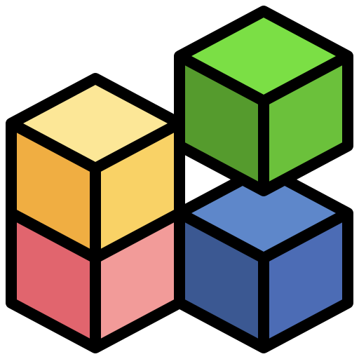

Bat Didáctico

Un aplicativo web para aprender y generar scripts BAT de manera sencilla.
Explora y aprende a usar comandos esenciales de Windows como Netsh, Ipconfig, Icacls, Logman y muchos más. Haz clic en el logo del menú para ver los módulos.
Crea tus propios scripts BAT personalizados de forma fácil y rápida con nuestro generador de scripts interactivo.
Ver másAccede a documentación detallada y ejemplos prácticos para cada comando y módulo disponible en la plataforma.